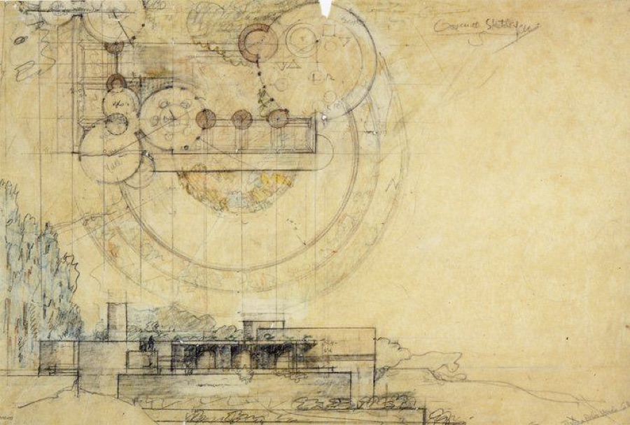
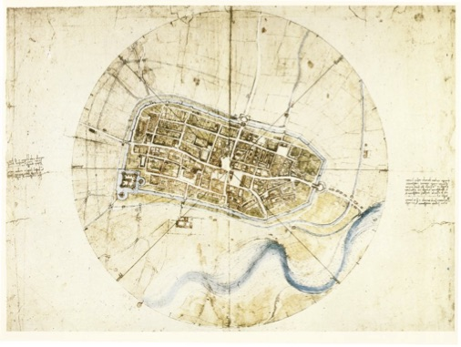
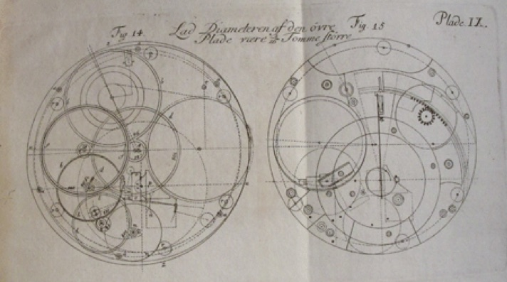

A Quarterly Journal
Jeffrey Woodward, Founder & Owner
Ray Rasmussen, General Editor
Volume 12, Number 4, December 2018

Charles D. Tarlton
Northampton, Massachusetts, USA
A Frank Lloyd Wright Architectural Drawing as Abstract Art:
Ekphrastic Tanka Prose
A real building is one on which the eye can light and stay lit.
– Ezra Pound
Kissing Circles: Ralph Jester House, Plan and Elevation, Never Built
(Pencil and colored pencils on tracing paper mounted to board, 1938; 14 x 21¼ inches)

[C]ertain geometric forms have come to symbolize for us and potently to suggest certain human ideas, moods, and sentiments—as for instance, the circle, infinity; the triangle, structural unity; the spire, aspiration; the spiral, organic progress; the square, integrity.
—Frank Lloyd Wright
1
This drawing might have been by Leonardo da Vinci—the circles, the colors, the faded writing—and when I looked through a collection of Leonardo's drawings, I came upon the map of Imola* that he had drawn for Cesare Borgia and which led Borgia to employ him making strategic maps and drawings. Now, I know a little about Cesare Borgia (I was at one time a Machiavelli scholar) and the way his genius and dexterity carried him only so far; in the end he fizzled out. The Ralph Jester House was never built, but many years later Bruce Pfeiffer, archivist of the Frank Lloyd Wright Foundation, built a house based on Wright's original plans on Wright Foundation land near Taliesin West. Circles, as the saying goes, within circles.
you could never say
straight away and for certain
what this drawing showed
an old clock's inner workings
or his dream of the cosmos
universal thoughts
caught in geometry's throes
informing the world
giving exact measurements
of all the proper angles
Plato said it first
the Real is approximate
to the pure Ideal
like Euclid and his perfect
angles, parallels, and spheres
2
Well do I know that I am mortal, a creature of one day.
But if my mind follows the winding paths of the stars
Then my feet no longer rest on earth, but standing by
Zeus himself I take my fill of ambrosia, the divine dish.
—Ptolemy, Almagest
This could be a picture of a house on a hillock with trees, but the elevation seems to have descended to earth out of the spherical heavens above it. In the heavens, the nested spheres of the universe almost hover over the rectangular arrangement of the house, like eagles over eaglets in their eyrie, imparting sustenance and bespeaking figuration. All this announces an idea of harmonics, how the one—thing, sound, mood, focus, and number—fits and echoes off the others, makes of certain observations their concentric spheres. From there, from the magic and the edges of the circle, we measure distances and relations to the end of our familiarity.
where the planets were
when you were exactly born
math from several chords
in the choir of the theorem
the harmony of the spheres
if there are no chains
to hold artist to the thing
but the thing's idea
justifies, we now know each
color, smudge, or rough collage
the shape of circles
squared and sharp-lined rectangles
an anomaly
of trees asymmetrical
only partly colored in
3
There are 24 hours in a mean solar day, 60 minutes in each hour, and 60 seconds in each minute. The question shifting among the abstractions is—what exactly is a second? Well you make a gear wheel that contains 360 teeth, and connect it to a tension source such that the wheel moves one notch each time the sun comes round again. When that wheel moves it sets in motion another gear with twenty-four notches that, in turn, moves another of sixty notches and that still another of sixty notches. Am I babbling do you think? I'll try again. The earth turns 360° in that mean solar day, that's 15° per hour,
0.25° per minute or .0041666...° per second. And that same practical question comes up again—what is a second? The time it takes a person standing on the equator to travel .287 miles in the rotation of the earth. Lay out lines and circles, the lines and circles of a clock, or watch the shadows of the sundial, and as they move or make a clicking sound, well, those are the ratchets and their click is where the pillars of the frame bridge between wheels and springs. There were two wheels in John Harrison's sea clock that carried one second's click to the escapement.**
workings of a watch
in the clouds above the hills
telling ships at sea
the distances lateral
from Portsmouth to Jamaica***
all that circles do
scattering their energy
in swirled directions
making all things relative
their objects learning to speak
technical drawing
rests at bottom on the line
but when the circle
has been twirled off its compass
time and space are synthesized
Author's Notes:
*Leonardo da Vinci, town plan of Imola in the Republic of Florence; pencil, chalk, pen and wash on paper, 1502; 17.32 x 23.7 inches:

** Drawings of John Harrison's H4 (fourth generation) chronometer of 1761 from John Harrison, The Principles of Mr. Harrison's Time-Keeper, London, 1767:

*** John Harrison's navigational chronometer was tested on a voyage between Portsmouth, England, and Jamaica.